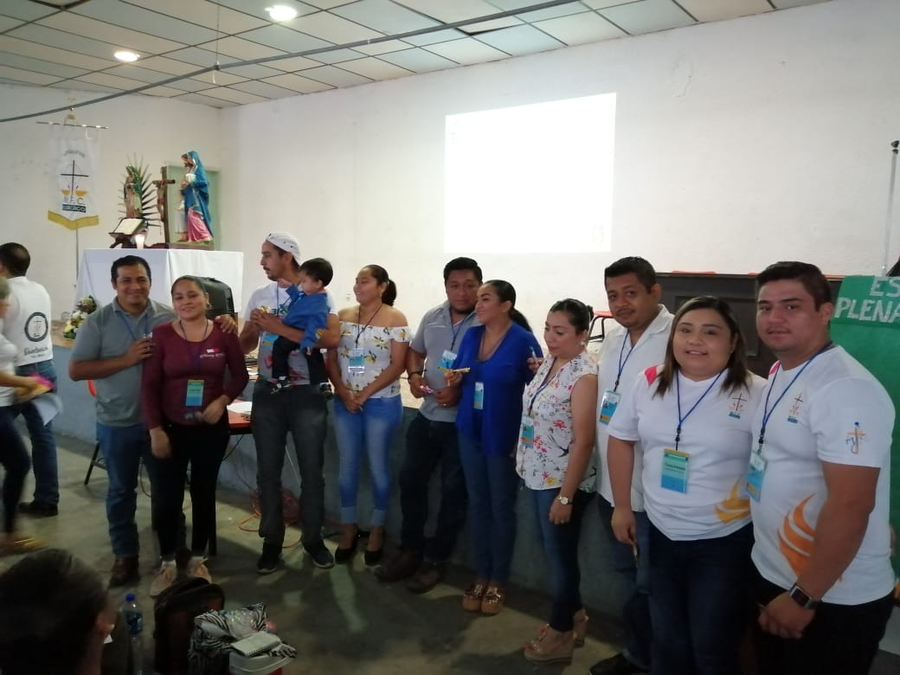

¿Tienes entre 12 y 15 años? MFC tiene un lugar para ti.
“Los jóvenes y adolescentes tienen una misión muy importante, la dar testimonio de que viviendo en valores humanos y cristianos, se logra hacer crecer la fe en un futuro donde reine la justicia y la paz, y la esperanza de que juntos, con la alegría y transparencia que caracteriza esta etapa de su vida, puedan proclamar que amar a Cristo es vivir en plenitud."
Equipo Coordinador Nacional 2010 – 2013 Este proyecto inició dando una respuesta a la necesidad e inquietud de los adolescentes de tener temas adecuados a esta etapa, que los ayuden
El Ciclo Básico de Formación para adolescentes abarca 5 diferentes dimensiones dentro de su contenido, los cuales son: 1. AMOR A MÍ MISMO, en esta sesión se trabaja la autoestima y otros temas relativos al desarrollo humano del adolescente. 2. AMOR A LOS OTROS, es la dimensión relativa a las relaciones con las otras personas y se abordan temas como la comunicación y la organización de grupo. 3.AMOR A DIOS, es la dimensión de la fe, en la cual tratamos ayudar al adolescentes a responder dudas e inquietudes acerca el que significa ser seguidor de Jesús y lo que implica nuestra fe Cristiana. 4.AMOR A LA FAMILIA, somos un movimiento cuyos objetivo se centran en la familia y los valores que en ella se cultivan, por lo que buscamos una mejor comprensión del adolescente de su pertenencia en esa comunidad que nos dio origen. 5.AMOR A LA CREACIÓN, buscamos la conciencia en que somos parte de este todo que es la creación y así poder comprometer a los adolescentes en el cuidado y defensa de la vida y el respeto a la naturaleza.